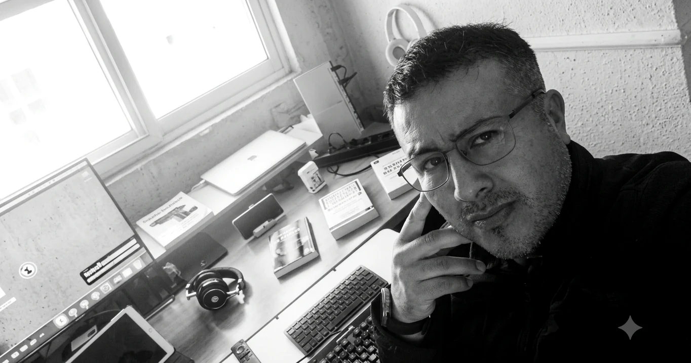

Ecuador
El origen. Donde comenzó mi historia, mi educación y mi curiosidad por entender cómo funcionan las cosas.
 StanNet.Space
StanNet.Space
STANNET / SOBRE MÍ
He vivido en Ecuador, España, Estados Unidos, Suecia, Reino Unido y Francia. Cada lugar amplió mi forma de mirar, aprender y adaptarme.
Recorrer mi historia ↓
01 / MI HISTORIA
6 PAÍSES · 3 CONTINENTES · UNA VIDA EN MOVIMIENTO
El origen. Donde comenzó mi historia, mi educación y mi curiosidad por entender cómo funcionan las cosas.
Una parte central de mi trayectoria personal, profesional y académica, y el lugar desde el que hoy sigo construyendo.
Una etapa más de un recorrido internacional que me enseñó a observar otras escalas, ritmos y formas de vida.
Adaptación, idioma y otra cultura. En Estocolmo estudié sueco hasta SFI C3 con Hermods.
En Londres estudié inglés en International House y trabajé también con el método Callan.
Otro capítulo de una vida marcada por cruzar fronteras, conocer contextos diferentes y aprender a adaptarme.
Mi historia comienza en Ecuador, donde cursé el Bachillerato en Química y Biología en el Colegio Experimental Bernardo Valdivieso. Después estudié durante dos años Odontología en la Universidad Estatal de Cuenca.
Mi formación nunca fue una línea recta. Fue una suma de lugares, decisiones, cambios y nuevas preguntas.
Después llegaron otros países, otros idiomas y otras formas de entender el trabajo, la educación y la vida cotidiana. Vivir en España, Estados Unidos, Suecia, Reino Unido y Francia me obligó una y otra vez a empezar desde contextos nuevos.
Ese recorrido internacional me enseñó algo que hoy está en el centro de StanNet: aprender no consiste solo en acumular información; consiste en adaptarse, conectar ideas y seguir avanzando.
Con el tiempo, la tecnología se convirtió en el punto donde muchas de esas experiencias comenzaron a encontrarse. Programación, redes, inteligencia artificial y ciberseguridad pasaron de ser materias de estudio a convertirse en herramientas para construir.
Decidí estudiar Desarrollo de Aplicaciones Web (DAW). Mi formación ha pasado por INS Brianda de Mendoza, ILERNA y continúa actualmente en Jobi FP.
A la formación reglada se suma el aprendizaje autónomo: cursos en Platzi y Udemy, formación en ciberseguridad con C1b3rWall Academy de la Policía Nacional y formación especializada en Splunk.
Programación, redes, inteligencia artificial y ciberseguridad empezaron a dejar de ser solo materias que estudiar. Empezaron a convertirse en cosas que quería construir.
Ver formación y certificados ↗03 / EL ORIGEN DE STANNET
Esa pregunta resume cómo nació StanNet. En lugar de limitarme a aprender cómo funcionan las tecnologías, empecé a utilizarlas para crear mis propios proyectos.
Así nació StanNet.space: mi espacio personal para experimentar, aprender y construir. Un laboratorio donde reúno programación, inteligencia artificial, ciberseguridad, herramientas de software, academias interactivas, música y nuevos proyectos.
Algunas ideas funcionan a la primera. Otras hay que romperlas, reconstruirlas y volver a intentarlo. Precisamente ahí está el aprendizaje.
Explorar proyectos ↗Mi siguiente objetivo es profundizar en ciberseguridad, continuar desarrollando mis conocimientos de redes, Linux, análisis y seguridad informática y, posteriormente, avanzar hacia Ingeniería Informática.
StanNet crecerá conmigo. Representa mi voluntad de seguir aprendiendo, experimentar y convertir ideas en proyectos reales.
CONTACTO